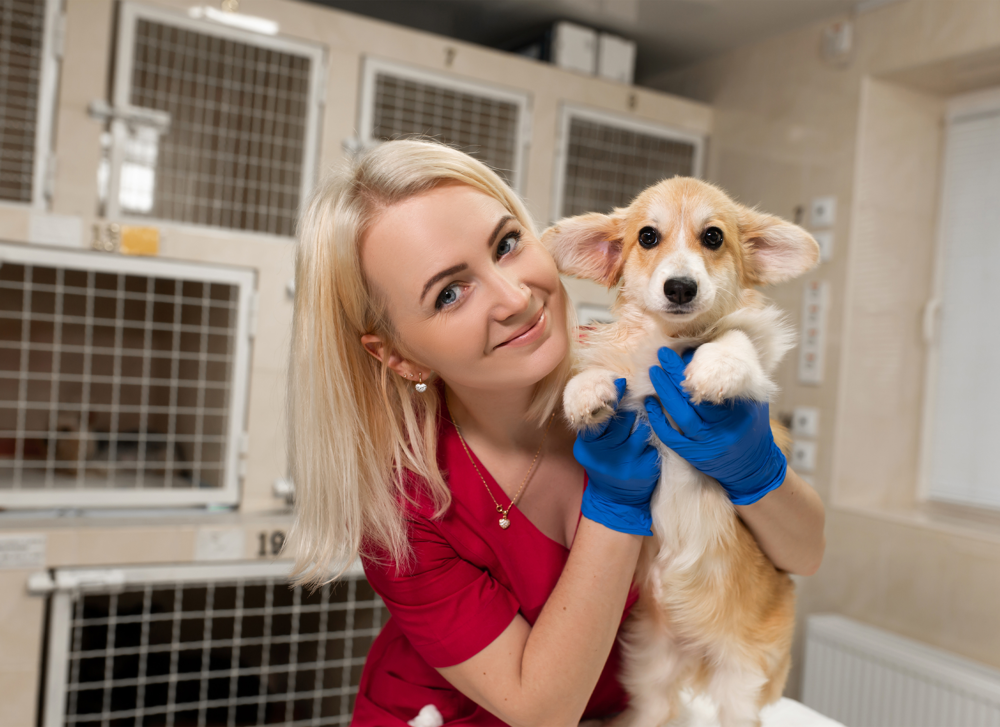

Home
Welcome to Safe Haven Animal Shelter, where compassion meets action. As a nonprofit organization serving the Houston area, we are dedicated to rescuing animals from neglect, abuse, and abandonment, and giving them the care and love they need to heal. From emergency rescue and medical treatment to rehabilitation and adoption, we are with each animal every step of the way. Our mission is not only to save lives, but to create lasting change through education, outreach, and community involvement. Whether you’re looking to adopt, foster, volunteer, or support our cause, you’re helping us give animals the second chance they deserve—and a safe place to call home.